25일 production(FINAL_S3)과 같은 입력·매크로·prefit에서 비교 기준을 nominal ver2(AN-26-048 nominal ctau template fit)로 바꾸고 최종 2D fit 규칙을 FINAL_V2로 정했다. 모든 PR 해상도 폭 제약은 MC prefit 값을 중심으로 하고 제약 폭이 MC prefit 오차 이상이다. prefit부터 전부 다시 돌려 같은 값을 재현했다.
J/ψ의 nonprompt 비율 B는 pT, |y| 빈마다 뮤온 쌍 불변질량과 의사 고유 수명 ℓJ/ψ의 2차원 비구간 최대우도 fit으로 구한다. 신호와 배경의 질량 모양은 각각 prompt J/ψ 시뮬레이션과 데이터에서 미리 정해 고정하고, ℓJ/ψ 분포는 prompt 성분을 시뮬레이션에서 정한 Gauss 해상도 함수로, nonprompt 성분을 이와 접은 지수 함수의 합으로, 배경을 질량 sideband에서 정한 모양으로 기술한다. 해상도와 nonprompt 모양의 매개변수는 고정하거나, 시뮬레이션 값을 중심으로 하고 폭이 시뮬레이션 오차 이상인 Gaussian 제약 아래 두거나, 자유롭게 두며, 그 선택은 신호 대 배경 비에 따라 pT 영역별로 정한다. 이렇게 얻은 B는 nominal ctau template fit과 20개 빈 중 19개에서 2% 이내, 나머지 한 빈에서 3% 이내로 일치한다.
The nonprompt fraction B of the J/ψ is extracted in each (pT, |y|) bin from a two-dimensional unbinned maximum-likelihood fit to the dimuon invariant mass and the pseudo-proper decay length ℓJ/ψ. The signal and background mass shapes are fixed from prompt J/ψ simulation and from data, respectively; in ℓJ/ψ the prompt component is a Gaussian resolution function determined from simulation, the nonprompt component a sum of exponentials convolved with it, and the background a shape determined from the mass sidebands. The resolution and nonprompt parameters are fixed, left free, or constrained around the simulation values with widths no smaller than the simulation uncertainties, chosen per pT region according to the signal-to-background ratio. The resulting B agrees with the nominal ℓJ/ψ template fit within 2% in 19 of the 20 bins and within 3% in the remaining one.
J/ψ의 nonprompt 비율 B는 뮤온 쌍 불변질량 mμμ과 의사 고유 수명 ℓJ/ψ의 2차원 비구간 최대우도 fit으로 pT, |y| 빈마다 구한다. fit은 다섯 단계의 사전 fit(prefit) 위에 세운다. prompt J/ψ 시뮬레이션의 질량 분포를 Gauss 함수 1개와 Crystal Ball 함수 2개의 합으로, 같은 시뮬레이션의 ℓJ/ψ 분포를 Gauss 함수 4개의 해상도 함수로, nonprompt J/ψ 시뮬레이션의 생성 수준 ℓJ/ψ 분포를 지수 함수 1–3개의 합으로 fit하고, 데이터의 질량 분포에서 Chebychev 다항식 배경 모양을, 질량 sideband의 ℓJ/ψ 분포에서 배경 ℓJ/ψ 모양을 정한다. 최종 fit에서 질량 모양은 고정하고, nonprompt 성분은 해상도 함수와 접은 지수 함수들의 합으로, 배경은 sideband에서 정한 모양에 수명과 구성비를 자유롭게 두어 기술하며, 신호·배경 수율과 B는 자유 매개변수다.
해상도 함수의 폭과 구성비, nonprompt 지수 함수의 상대 비율과 수명은 시뮬레이션 값을 중심으로 하는 Gaussian 제약 아래 fit하고, 제약 폭은 시뮬레이션 오차보다 작게 두지 않는다. nonprompt 지수 함수가 둘 이상인 빈에서는 그 상대 비율을 시뮬레이션 공분산으로 제약한다. 제약 폭은 빈마다 따로 조정하지 않고 신호 대 배경 비가 비슷한 pT 영역별로 정했다. |y| < 1.6에서는 해상도 구성비를 시뮬레이션 값에 고정하고 평균은 자유, 폭은 제약하며, nonprompt 수명은 모두 자유롭게 둔다. 1.6 < |y| < 2.4에서는 pT가 높아질수록 해상도를 단계적으로 시뮬레이션에 묶는다. 3–4 GeV/c에서는 네 폭을 모두 시뮬레이션 오차만큼의 폭으로 제약하고, 4 GeV/c 이상에서는 가장 좁은 두 폭을 고정한 채 꼬리만 제약한다(8–10 GeV/c는 네 폭 모두 제약). nonprompt 수명은 5 GeV/c 아래에서 모두 제약하고, 5 GeV/c 이상에서는 가장 긴 수명만 자유롭게 둔다(10–20 GeV/c에서는 나머지 nonprompt 제약의 공분산을 2배로 넓힌다). 신호 대 배경 비가 0.1 아래인 가장 낮은 두 forward 빈은 제약을 느슨하게 두는데, 1 < pT < 2 GeV/c에서는 폭·구성비·nonprompt 수명의 제약 폭을 시뮬레이션 오차의 여러 배로 넓히고, 2 < pT < 3 GeV/c에서는 해상도의 폭을 자유롭게 두고 nonprompt 성분을 시뮬레이션의 평균 수명에 제약한 지수 함수 하나로 기술한다. 이렇게 얻은 B는 nominal ctau template fit과 20개 빈 중 19개에서 2% 이내, 나머지 한 빈(1.6 < |y| < 2.4, 10 < pT < 12 GeV/c)에서 3% 이내(nominal 통계 오차의 0.7배)로 일치한다. 모든 fit은 수렴하고 공분산 행렬이 정확하며, 질량과 ℓJ/ψ 투영의 χ²/ndf는 0.5–1.1이다.
The nonprompt fraction B of the J/ψ is extracted in each (pT, |y|) bin from a two-dimensional unbinned maximum-likelihood fit to the dimuon invariant mass mμμ and the pseudo-proper decay length ℓJ/ψ. The fit is built on five prefits: the mass distribution of prompt J/ψ simulation is fitted with the sum of one Gaussian and two Crystal Ball functions, its ℓJ/ψ distribution with a resolution function of four Gaussians, the generator-level ℓJ/ψ distribution of nonprompt J/ψ simulation with a sum of one to three exponentials, the mass distribution in data with a Chebychev polynomial background, and the ℓJ/ψ distribution of the mass sidebands with the background ℓJ/ψ model. In the final fit the mass shapes are fixed, the nonprompt component is a sum of exponentials convolved with the resolution function, the background follows the sideband shape with free lifetimes and fractions, and the signal and background yields and B are free parameters.
The resolution widths and fractions and the relative fractions and lifetimes of the nonprompt exponentials are fitted under Gaussian constraints centred at the simulation values, with constraint widths never smaller than the simulation uncertainties. Where the nonprompt shape has more than one exponential, their relative fractions are constrained with the simulation covariance. The constraint widths are not tuned bin by bin but set once per pT region of similar signal-to-background ratio. For |y| < 1.6 the resolution fractions are fixed to simulation, the resolution mean is free, the widths are constrained, and all nonprompt lifetimes are free. For 1.6 < |y| < 2.4 the resolution is tied to simulation step by step as pT increases: at 3–4 GeV/c all four widths are constrained within the simulation uncertainties, and above 4 GeV/c the two narrowest widths are fixed and only the tails are constrained (all four widths constrained at 8–10 GeV/c). The nonprompt lifetimes are all constrained below 5 GeV/c, and above 5 GeV/c only the longest lifetime is free (at 10–20 GeV/c the covariance of the remaining nonprompt constraints is doubled). In the two lowest forward bins, where the signal-to-background ratio is below 0.1, the constraints are loosened: for 1 < pT < 2 GeV/c the constraint widths on the resolution widths, fractions and nonprompt lifetimes are several times the simulation uncertainties, and for 2 < pT < 3 GeV/c the resolution widths are left free and the nonprompt component is a single exponential constrained to the mean lifetime of the simulation. The resulting B agrees with the nominal ℓJ/ψ template fit within 2% in 19 of the 20 bins and within 3% (0.7 times the nominal statistical uncertainty) in the remaining bin (1.6 < |y| < 2.4, 10 < pT < 12 GeV/c). All fits converge with an accurate covariance matrix, and the χ²/ndf of the mass and ℓJ/ψ projections lie between 0.5 and 1.1.
| 빈 (GeV/c) | B ± fit 오차 | Bnom | 차이 | σnom | 판정 | mass p | ctau p | ctau 범위 [mm] | NP 범위 밖 |
|---|
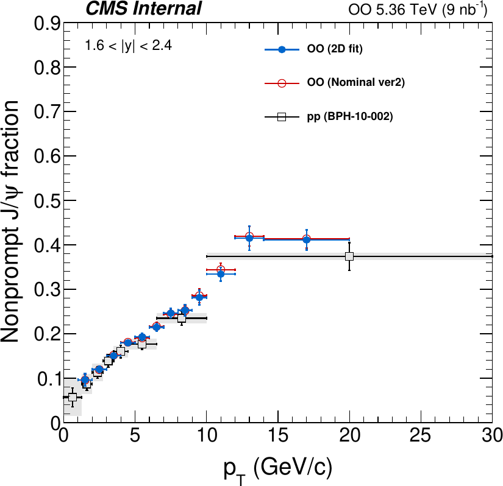
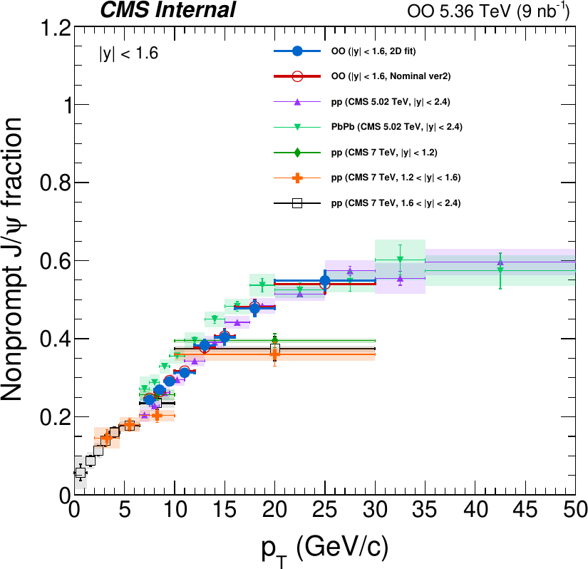
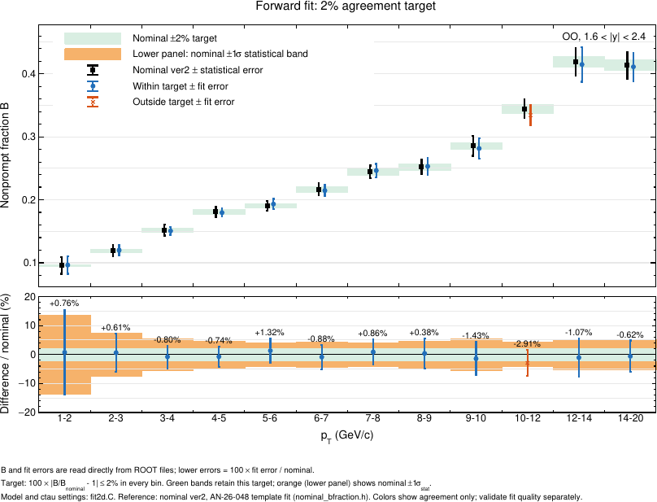
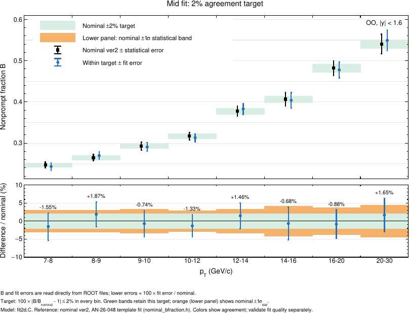
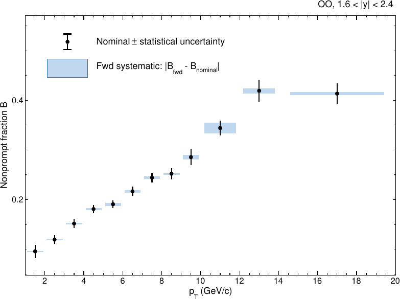
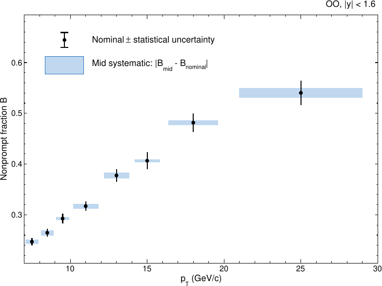
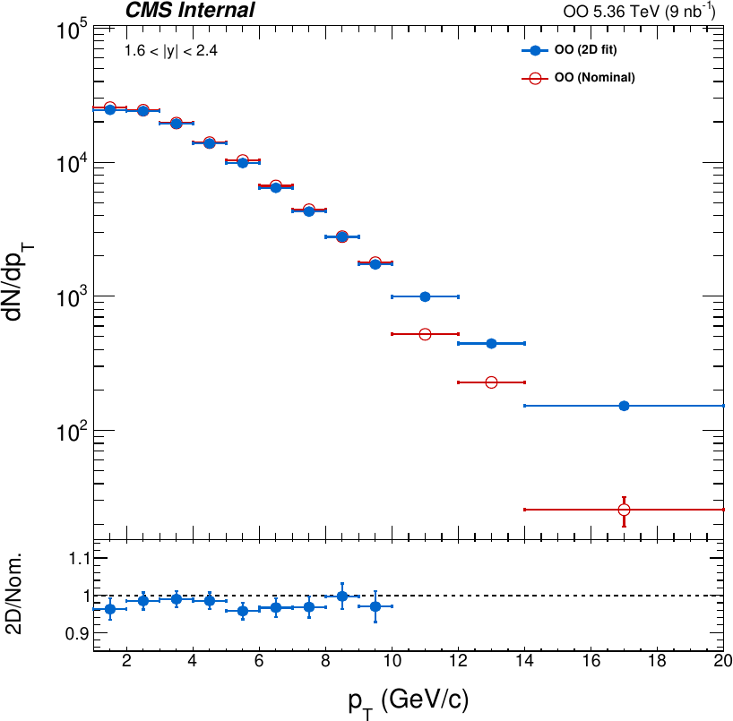
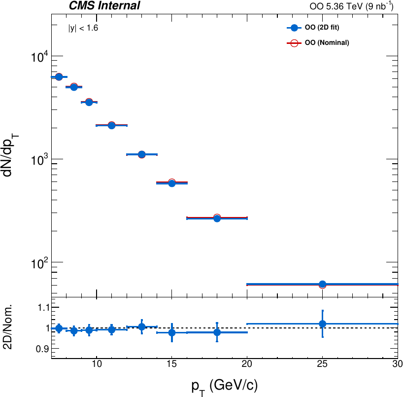
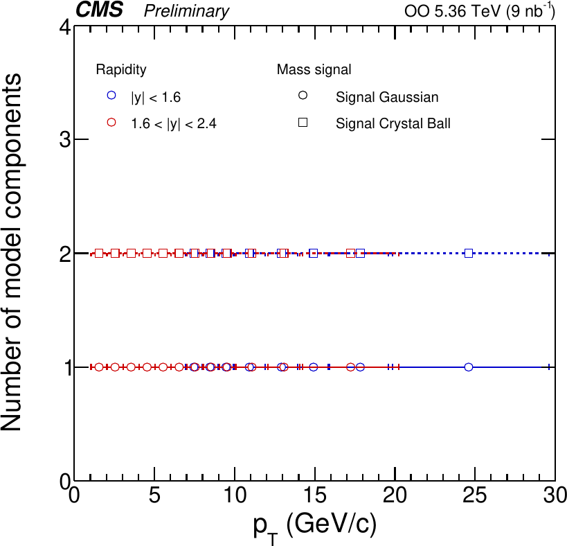
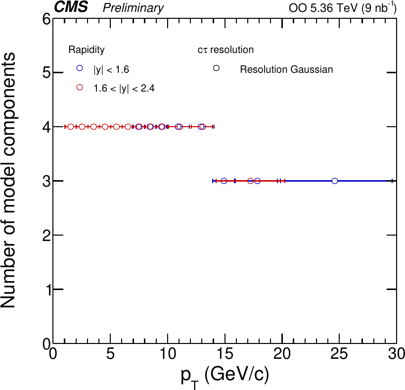
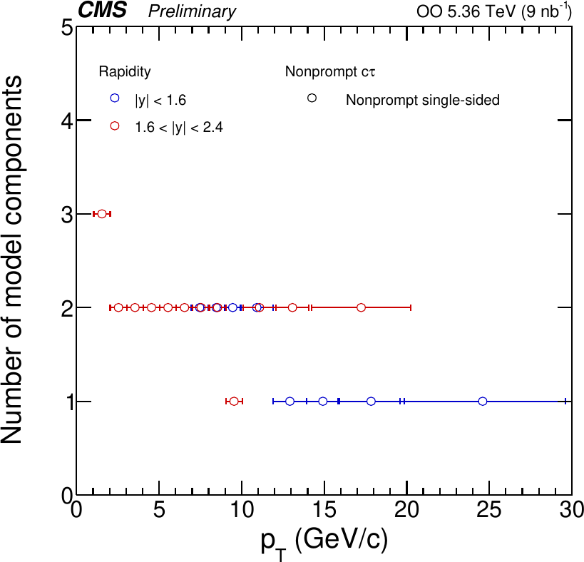
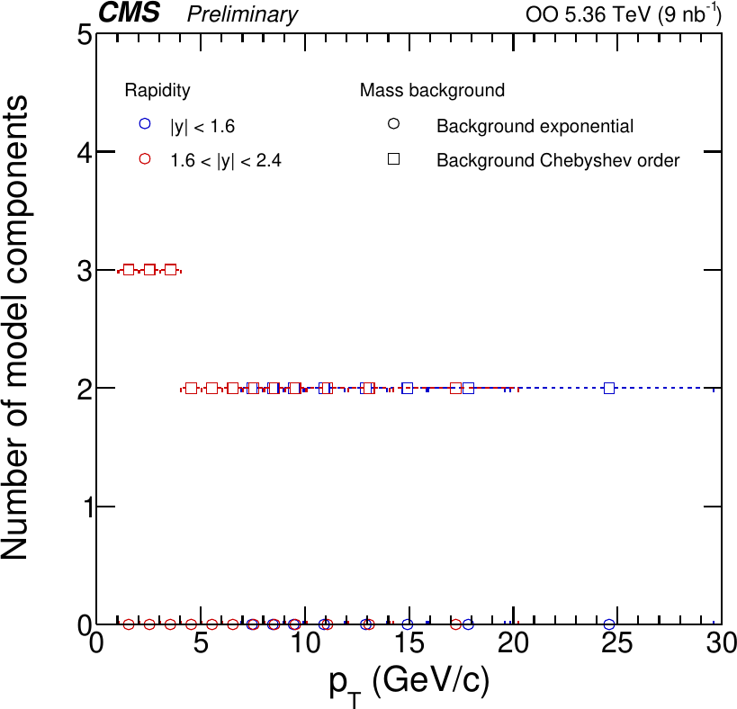
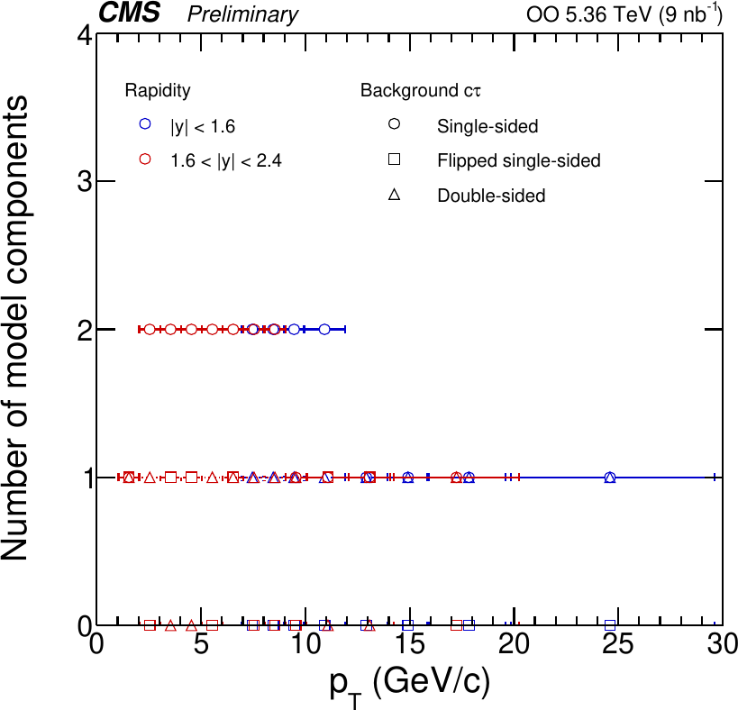
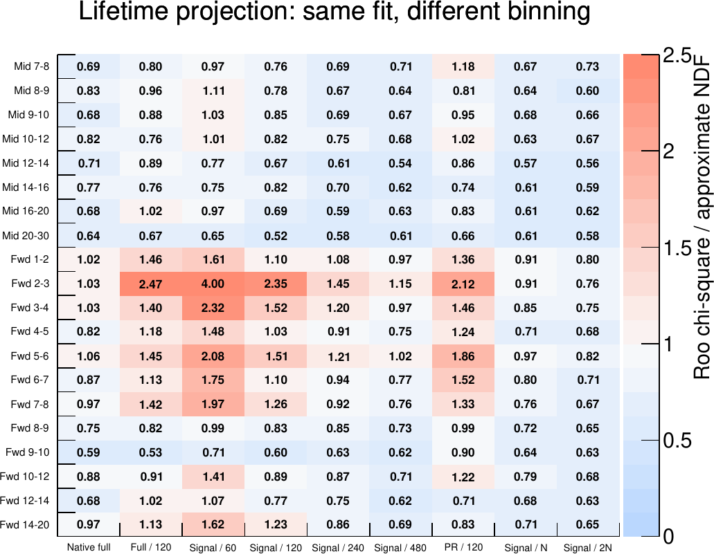
| PDF (어느 prefit에서 오나) | final fit에서 |
|---|---|
| 신호 mass (MC mass: Gauss 1 + Crystal Ball 2) | 모양 고정 |
| 배경 mass (DATA mass, Chebychev) | 모양 고정 |
| 배경 ctau (DATA mass sideband) | 해상도 Gauss 고정. 수명·비중 자유, fwd 1–5만 sideband 값에 제약 |
| 수율과 B | 자유. nominal은 likelihood·초기값·제약 중심 어디에도 쓰지 않음 |
| ctau 범위 | 24일과 같음: fwd 1–2 [−4, 6.5], 3–5 [−3.5, 4.5], 5–10 [−1, 4], 10–20 [−0.5, 3], mid [−1, 4]. fwd 2–3만 [−20, 20] (10/26 변경) |
| 그룹 | S/B | PR 평균 | PR 폭 | PR 구성비 | NP 수명·비중 | 배경 ctau |
|---|---|---|---|---|---|---|
| mid 7–30 | 1.1–3.1 | 자유 | 제약 (0.0025, 0.005, 0.010, 0.020 mm) = MC 오차의 1.1–16배 | MC 고정 | 수명 전부 자유, 구성비 MC 공분산 제약 | 자유 |
| fwd 3–4 | 0.10 | 자유 | 제약 = MC 오차 ×1 | MC 고정 | 전부 MC 제약 | sideband 제약 |
| fwd 4–5 | 0.14 | 자유 | σ₁, Δ₂ 고정, Δ₃·Δ₄ 제약 = MC 오차 ×1 | MC 고정 | 전부 MC 제약 | sideband 제약 |
| fwd 5–8 | 0.25–0.60 | 자유 | σ₁, Δ₂ 고정, Δ₃·Δ₄ 제약 (0.010, 0.020 mm) | MC 고정 | 가장 긴 수명 자유, 나머지 제약 | 자유 |
| fwd 8–9 | 0.81 | 자유 | 제약 (0.0025, 0.005, 0.010, 0.080 mm) | MC 고정 | 가장 긴 수명 자유, 나머지 제약 | 자유 |
| fwd 9–10 | 0.94 | 자유 | 제약 (0.0012, 0.0024, 0.004, 0.080 mm) | MC 고정 | 가장 긴 수명 자유, 나머지 제약 | 자유 |
| fwd 10–20 | 1.1–1.6 | 자유 | σ₁, Δ₂ 고정, Δ₃ 제약 0.004 mm, Δ₄ 제약 = MC 오차 ×1 (14–20은 Gauss 3개) | MC 고정 | 2성분(9월 NP2), 가장 긴 수명 자유, 나머지 MC 공분산 ×2 | 자유 |
| 빈 | S/B | 설정 | 결과 | 비교 |
|---|---|---|---|---|
| fwd 1–2 | 0.06 | PR 폭 제약 (0.020, 0.040, 0.080, 0.160 mm), 구성비 MC 오차 ×4 (공분산 ×16), NP 전부 MC 오차 ×4 (공분산 ×16), 배경 sideband 오차 ×4 | +0.76% | 9월 설정(NP MC 오차 ×13.2, 공분산 ×175) 그대로 +4.44% |
| fwd 2–3 | 0.08 | ctau 창 [−20, 20] mm. PR 평균·폭 자유, 구성비 MC 고정. NP 지수 1개, 수명을 MC NP prefit 평균 수명(0.4231 ± 0.0010 mm)에 제약. 배경 수명·구성비 자유, 해상도 sideband 고정. prefit: 배경 2/0/1 wide-τ | +0.61% | 25일과 같은 설정. 이전 nominal 대비 +2.96% |
| 설정 | fwd 3–4 | fwd 4–5 |
|---|---|---|
| 폭 제약 MC 오차 ×1 | −0.80% | −6.52% |
| ×1.5 | −2.66% | −7.18% |
| ×2 | −3.64% | −7.50% |
| ×3 | −4.78% | −8.00% |
| core 고정 + 꼬리 MC 오차 ×1 | +7.31% | −0.74% |
| core 고정 + 꼬리 MC 오차 ×2 | +6.65% | −1.81% |
| FINAL_S3 (제약 0.0005… mm, MC 오차의 0.4–0.7배) | +2.03% | −4.80% |
| Δ₄ 제약 폭 | 10–12 | 12–14 |
|---|---|---|
| 0.008 mm (FINAL_S3, MC 오차의 0.54·0.77배) | −2.92% | −1.07% |
| MC 오차 ×1 (채택) | −2.91% | −1.07% |
| MC 오차 ×2 | −2.91% | −1.06% |
| 0.08 mm | −2.85% | −0.81% |
| 변경 | fwd 10–12 |
|---|---|
| 채택 (FINAL_V2) | −2.91% |
| ctau 창 하한 −0.1 mm (PR 피크를 자름) | −1.82% |
| ctau 창 하한 −0.15 mm | −2.74% |
| fwd pT ≥ 10 질량 창 [2.65, 3.5] | −2.25% |
| fwd pT ≥ 10 질량 창 [2.7, 3.5] | −1.42% |
| 질량 의존 배경 ctau (전 빈 적용 시 다른 빈이 +3~5.5%) | −1.0% |